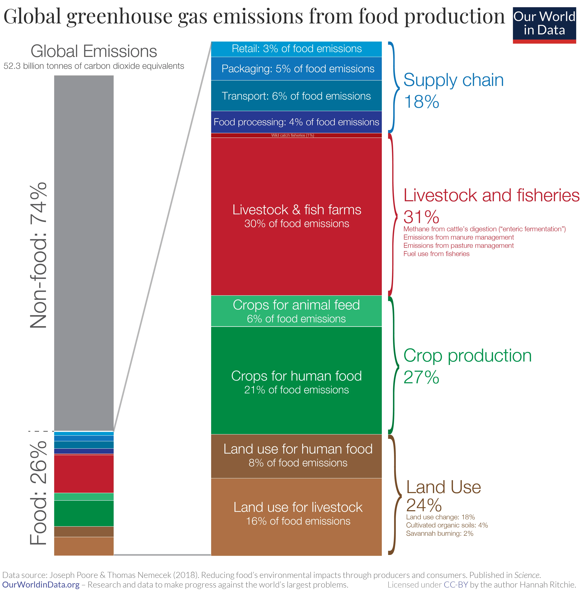

Un peligro para la biodiversidad ☣️
Un 94% de la biomasa de mamíferos terrestres en el mundo—excluyendo los humanos—está formada por animales de granja, mientras que los mamíferos salvajes ya sólo representan un 6%(1). La ganadería, la agricultura y la acuacultura son consideradas una amenaza para 24001 de las 28.338 especies consideradas en peligro de extinción por la IUCN, principalmente como contribuidoras a la destrucción de hábitats naturales.
La ganadería, incluyendo las granjas y las plantaciones destinadas a alimentar animales de granja, acapara un 77% de la superficie terrestre destinada a la producción de alimentos a nivel mundial. Sin embargo, sólo aporta un 18% de las calorías y un 37% de las proteínas que sostienen la población mundial. En contraposición, el cultivo de plantas destinadas al consumo humano representa sólo un 23% de la superficie agrícola y sin embargo aporta el 82% de las calorías y el 63% de las proteínas.
*Datos del 2019

Emisiones de gases de efecto invernadero üè≠
"Come local" es una recomendación que sentimos a menudo. Aunque nos pueda parecer lógico a primera vista, es un consejo muy poco eficaz a la hora de reducir nuestro impacto ambiental. El transporte de alimentos representa sólo un 6% del total de emisiones de gases de efecto invernadero del sector alimentario. El tipo de alimento que comemos, pues, es mucho más importante que el lugar de donde viene. Un estudio llevado a cabo en 2008 en Estados Unidos concluyó que sustituir la carne por alternativas vegetales una vez a la semana tenía más impacto que comprar todos los alimentos de km 0 cada día de la semana.
Se estima que la producción, transporte y venta de 1 kg de pollo libera el equivalente a unos 6 kg de CO2. En comparación, alimentos vegetales como el trigo, maíz, tubérculos, frutos secos, guisantes, tomates, manzanas, plátanos, cítricos... liberan entre 0.3 y 1.4, es decir, entre cuatro y veinte veces menos.
La carne, los huevos y los lácteos representan el 83% del total de emisiones de gases de efecto invernadero derivadas de la alimentación europea. En comparación, las frutas, verduras, legumbres y frutos secos sumados representan un 4%, los cereales otro 4% y los tubérculos un 1.5%. El 7.5% restante proviene de aceites y bebidas.

Según las Naciones Unidas, la ganadería y la piscicultura liberan alrededor de un 14.5% del total de emisiones de gases de efecto invernadero en el mundo, en comparación con un 13% de emisiones derivadas del transporte. Es decir, el consumo de carne, pescado, huevos y lácteos contribuye más al calentamiento global que todos los coches, aviones, barcos, camiones y trenes sumados.
La pesca, un desastre ecol√≥gico üé£
La Organización de las Naciones Unidas asegura que tres cuartas partes de las zonas de pesca en el mundo están sobreexplotadas o severamente empobrecidas debido a la sobrepesca. Hoy en día se pesca sobre todo mediante redes masivas nada selectivas que causan que, junto con los peces capturados, también se capture animales de especies que no son un objetivo. Se estima que cada año se mata a más de 300.000 delfines, ballenas y belugas como daños colaterales de la pesca.
La mayoría de peces criados en piscifactorías son alimentados con harina de pescado obtenida de cantidades enormes de peces pequeños pescados en los mares y océanos, lo que acelera significativamente su proceso de extinción.

Un estudio reciente llevado a cabo en el Océano Pacífico en un área de 1.6 millones de km estima que un 46% del peso total de los desechos marinos recolectados corresponden a redes de pesca, mientras que la mayoría del 54% restante se compone también de otros materiales de pesca. Las botellas, tapones, bolsas y pajas de plástico sólo representan un 8%.
Fuentes üî§
1. Bar-On, Y. M., Phillips, R., & Milo, R. (2018). The biomass distribution on Earth.
Proceedings of the National Academy of Sciences, 115(25), 6506-6511.
2. iucnredlist.org
3. Poore, J., & Nemecek, T. (2018). Reducing food’s environmental impacts through producers and consumers.
Science, 360(6392), 987-992.
4. Weber, C. L., & Matthews, H. S. (2008). Food-miles and the relative climate impacts
of food choices in the United States. Environmental Science & Technology.
5. Sandström, V., Valin, H., Krisztin, T., Havlík, P., Herrero, M., & Kastner, T. (2018). The
role of trade in the greenhouse gas footprints of EU diets. Global Food Security, 19, 48-55.
6. fao.org
7. press.un.org
8. Catching fish, not flukes and flippers
9. Sustainability of Fish Feed in Aquaculture
10. Lebreton, L., Slat, B., Ferrari, F. et al. Evidence that the Great Pacific Garbage Patch is
rapidly accumulating plastic. Sci Rep 8, 4666 (2018).
Para saber más üîç
- Información sobre el impacto ambiental de diferentes tipos de alimentos
- Documental Cowspiracy sobre el impacto ambiental de la ganadería en Netflix o en YouTube.
- Documental Seaspiracy sobre el impacto ambiental de la pesca en Netflix